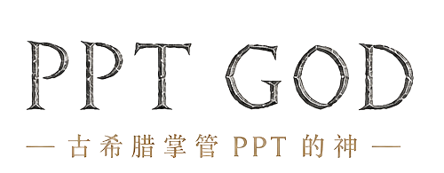

推荐定稿方向：主标只保留英文铭文字标；中文用铜色副标题承接“古希腊掌管 PPT 的神”的记忆点。
PPT God / 古希腊掌管 PPT 的神 VI Proposal
Brand system concept · visual review draft

让 PPT 看起来像已经被设计过。
这个方向把 PPT God 定义成专业 AI Deck Studio：界面耐看、低噪、适合长时间工作； “God”的记忆点收敛到铭文字标和铜色中文副标里，不再依赖图形符号。
Investor narrative
Brief -> Outline -> Style -> Visual plan -> Prototype
1234
01 / Logo System
PPT GOD 铭文字标固定为主 Logo。
这版不再把图形 mark 当主 Logo。品牌识别直接落在 PPT GOD 的石刻铭文感字标，以及下方中文“古希腊掌管 PPT 的神”。
Primary Lockup
用于登录页、官网首屏、品牌页和导出物封面。这里不再加图示，避免图形抢走字标识别。
Dark Placement
深色封面和深色 UI 上只反白字标，中文仍用铜色。古希腊感来自字形，不来自神庙或桂冠。
02 / Visual Tokens
暖白工作台，深色行动，铜金记忆。
界面不是炫酷 AI 黑盒，而是一张可被反复编辑和判断的生产桌面。
Workbench#F7F5EF
Surface#FFFEFA
Primary#2D2A24
Inscription Copper#8B7658
Generation Blue#3F6F8F
Complete Green#657963
Review Red#9B5148
Structure Line#DED8CA
Decks with judgment.
Brand / ProductPPT God · 古希腊掌管 PPT 的神
UI Chinese确认内容，请视觉总监
State Copy正在生成样张，先检查 3 页效果
Rule大标题少，界面字小而清楚；不要装饰性口号堆叠。
02B / Wordmark In UI
把 PPT GOD 放进真实产品界面。
从这一版开始，PPT GOD 英文字标就是 logo 本身。图形符号退出主系统，只保留少量纹理和铜色线条辅助品牌气质。
登录页 / 品牌页
大尺寸使用完整 lockup：铭文英文在上，中文铜色副标在下。这里不放左侧图形，第一眼记住的是品牌名。
封面方向
正文页规则
素材判断
导出检查
封面 / 分享图
深色场景也只保留字标和中文副标，古希腊感靠刻痕、字距和铜色完成，不再靠桂冠或图标。
03 / Product Screens
登录页有品牌，工作台以效率为主。
首屏可以讲“从资料到成稿”；进入产品后，视觉让位给项目、页面、Agent 决策和下一步动作。
从资料到可交付演示稿。
整理叙事、确认方向、生成样张、导出 PPTX。每一步都围绕最终成稿，而不是只给你一段聊天回答。
进入 PPT God
04 / Brand Applications
品牌露出统一回到铭文字标。
对外传播可以更有戏剧性，但 logo 仍然只用 PPT GOD 字标和中文副标题。古希腊元素退到材质、线条和字距里。
God mode for better decks.
Use the drama here: launch banners, share cards, release notes, and pitch material.
LogoPPT GOD inscription wordmark
InterfaceWarm production desk
Primary actionDeep ink button
Generation stateRational blue, not neon
Slide outputDark seeds + readable inner pages
Do not do图形主标、神像、皇冠、过度金色、神殿皮肤